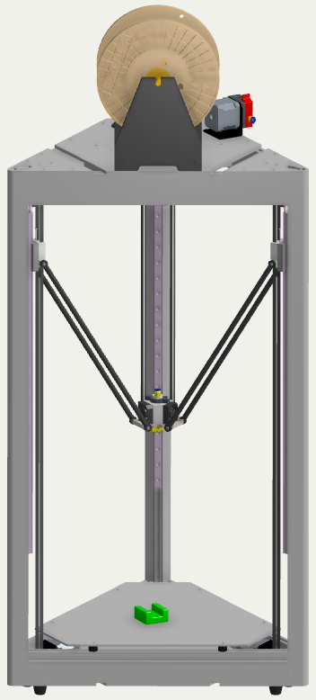

V-rep 在 Delta 3D Printer虚實整合模擬上的應用
組員
40323218 李冠興
40323230 張元
40323231 張立昇
40323250 詹偉志
指導老師：嚴家銘 教授
3D Printer
3D 列印機硬體設置
- 3D Printer 結構介紹
- 組裝過程
- 程式碼介紹
- Cura
- Pronterface
- 校正機台
- 重點提攜
V-rep
電腦輔助動態模擬
- V-rep 基本介紹
- On Shape 介紹
- V-rep 內部介紹
- 四連桿 範例
- 八連桿 範例
- 控制模擬
- Arduino
- Python
Pyslvs
平面連桿機構模擬及尺寸合成套件開發
- 使用技術
- 平面模擬
- 數學模型
- 尺寸合成
- 功能
- 開發歷程
3D Printer 結構介紹


組裝過程
程式碼介紹
Cura
機台設定 進入Cura後的主畫面後須先設定機台，點選機型設置(左圖)進入設定頁面(右圖)，此機台的平台為圓形所以設定Circular(因此寬、深因此相同)。擠出機也只有一個所以選擇1。由於機台為三角形機台，因此平台中心設為(0,0)。波特率設為115200(需與韌體相同)。設定完之後即可開始使用Cura

Pronterface
校正機台
重點提攜
V-rep 簡介
V-rep是一套機器人模擬軟體 ,讓使用者可以模擬整個機器人系統或他的子系統(如感測器或其它機械結構等等)
可用在遠端監控、硬體控制、快速原型驗證、演算法開發與參數調整、安全性檢查、機器人教學與工廠自動化模擬等各種領域。

On Shape 介紹
在模擬任何物件之前都必須引入 Stl 圖檔 ,於V-rep內部拆解開後並重新組裝(建立子屬關係) ,讓模擬軟體能夠建立各零件之基本約束條件。 繪圖採用On Shape網頁繪圖 ,優點為能夠協同繪圖 ,和組圓能夠分工合作 ,且能達到參數繪圖方式等等。
On Shape 介紹

V-rep 使用說明
在模擬任何物件之前都必須引入圖檔 ,並在內部拆解開來重新組裝(建立子屬關係) ,讓環境能辨別出實體的各部位零件
V-rep 使用說明
子屬關係主要是針對各部位的旋轉軸(主動與從動關係)
做設定 ,之後再依照個人需求 ,設定環境下的物理性質 ,最後再輸入參數來使其作動
下方為範例 (左為預期 , 右為模擬)


V-rep 使用說明
透過外界的參數輸入 ,可以模擬訊號輸入
V-rep 範例
V-rep 列印成果影片
Pyslvs

Planar Linkages Simulation
Dimensional Synthesis
Technologies

Python 3
- 易於閱讀與整理的程式碼
- 與中低階語言的結合力
- 背景記憶體處理
- Web 框架
- 物件導向、泛型編成
- 豐富的模組資源
Tool Kit


SWIG
- 將 C 語言與 C++ 語言轉換給中高階語言使用
- 適合對 C 語言熟悉的使用者製作程式端口
- 能夠在高階語言的程式碼中發揮 C 語言高速運算的能力
- GPL 3.0 授權
Cython
- 以 Python 語法編寫程式
- 使用 C++ 語言函式庫
- 用以大量運算驗證後的數學模型
- 擁有 C++ 語言高速執行的特性
Git and Fossil
- 雲端倉儲管理軟體
- 系統性的版本紀錄功能
Qt and PyQt


跨平台的 C++ 應用程式開發框架
- 商業授權
- LGPL 2.1
- GPL 3.0
- PyQt 作為 Python API 的形式連接 Qt
Planar Linkages Simulation

Solvespace
免費開源 2D 3D CAD 程式

CDemo
獨立幾何解題程式庫

Mathematical Model
Dimensional Synthesis
Features
Milestone of Pyslvs
開發歷程
- 編譯 Solvespace 對 Python API 成功，並成功用 matplotlib 繪製第一張四連桿的端點路徑。（2016 年 8 月中）
- PyQt 介面計畫開始。（2016 年 8 月底）
- 第一個 Release 版本 v0.1。（2016 年 9 月 27 日）
- 第四版 v0.4 加入了路徑解題的尺寸合成演算法系統。（2017 年 1 月 31 日）
- 第五版 v0.5 加入了滑塊和參數系統、復原重做功能、DXF 與 slvs 格式的匯出功能。（2017 年 3 月 4 日）
- 第六版 v0.6 開始進行大量錯誤修正與介面改善，並加入三角求解器。（2017 年 3 月 23 日 ~ 2017 年 4 月 29 日）
- 近來開發的 v0.7 版會針對檔案格式和演算法做改善。